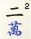
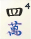
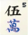
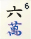
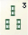
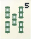

| Tile Types | |||
|---|---|---|---|
  |
Suits — Characters, Bamboo, and Circles/Orbs Used to form chows, pungs, and kongs. |
    |
Bonuses — Seasons and Flowers When drawn, set aside and draw a replacement. |
   |
Dragon Honours — Red, Green, and White Can form pungs and kongs, but not chows. |
    |
Wind Honours — East, South, West, and North Can form pungs and kongs, but not chows. Bonus if it matches the round wind or your seat wind. |
| Basic Groups | |
|---|---|
       |
Chow (three in a row) Concealed: form in your hand using tiles from the wall. Revealed: take the preceding player's discard, immediately combine with two tiles in your hand, and play face up. Form from suits only; dragons and winds cannot chow. |
 |
Pung (three of a kind) Concealed: form in your hand using tiles from the wall. Revealed: take any player's discard, immediately combine with two tiles in your hand, and play face up. If you take another player's discard, play continues to your right even if this skips some players. |
|
Kong (four of a kind) Concealed: form in your hand using tiles from the wall. Declare and play face down (now or later). Revealed (Small): take a tile from your hand and add it to a revealed pung. Revealed (Large): take any player's discard and immediately add it to a concealed pung; play face up. After playing any kong, draw a replacement tile from the back of the wall and proceed as if you had just drawn from the wall at the start of your turn. |
  |
Mahjong (winning hand) Any four basic groups + any pair. Ends the game immediately in victory for you. If you need only one tile to form mahjong, you can steal it from any player's discard as if forming a pung, even if it would be used to form a chow or pair. You can also form it by stealing the tile another player plays from their hand to form a small revealed kong. |
| Alternate Wins | |||
|---|---|---|---|
| 6 | Nature's Bounty: one of each flower and season If you already have seven, you can steal the 8th when someone else draws it. | 8 | The Thirteen Orphans: one of each honour + the 1 and 9 of each suit. |
| 8 |
The Blessing of Heaven: dealer wins with initial hand The Blessing of Earth: any other player wins with intial hand |
||
| Victory Bonuses | |||
| +1 | Win by drawing a tile | +2 | Win using the last discard of the game. |
| +1 | Win by stealing the tile another player uses to form a small kong. | +2 | Win using the replacement tile you draw after declaring kong. |
| Hand Bonuses | |||
| +1 | Whole hand is concealed, some chows | +1 | All chows, no honours |
| +3 | All pungs, some revealed | +3 | Half Flush: one suit + honours |
| +6 | Full Flush: one suit, no honours | +8 | Honour tiles only |
| +8 | Four concealed pungs | ||
| Group Bonuses | |||
| +1 | Pung of round wind | +1 | Pung of seat wind |
| +6 | three pungs + pair of winds | +8 | Great Winds: four pungs of winds |
| +1 | At least one pung of dragons | +3 | two pungs + pair of dragons |
| +6 | Great Dragons: three pungs of dragons | ||
| +1 | No flower tiles | +1 | Per flower or season tile |
| +1 | Per flower or season of the round | +1 | Per flower or season of your seat |
| Scoring | |||||||||||||||
|---|---|---|---|---|---|---|---|---|---|---|---|---|---|---|---|
| All bonuses are given in fan. Before playing you should agree on a minimum fan to declare victory (typically 3) and a maximum fan per round (typically 10-13). After tallying bonuses, consult the fan→points table below to determine actual score. Typically, if you win from the wall all other players pay you your score; if you win from discard, the discarding player pays double and the other players pay half or nothing. |
|||||||||||||||
| Fan | 0 | 1 | 2 | 3 | 4 | 5 | 6 | 7 | 8 | 9 | 10 | 11 | 12 | 13 | 14 |
| Points | 2 | 4 | 8 | 16 | 32 | 48 | 64 | 96 | 128 | 192 | 256 | 384 | 512 | 768 | 1024 |
| Two/Three Player Game | |||||||||||||||
|
For a three-player game, remove the 2-8 of characters, or disallow chow of characters. For a simple two-player game, disallow chow entirely and otherwise play normally. For more complexity, give each player two hands; you can move tiles between them at will but must go mahjong with both to win, and can't swap tiles once they are revealed. At end of game subtract loser's score (if they have a mahjong out) from winner's. |
|||||||||||||||